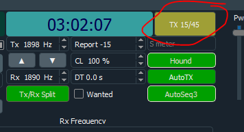

I don't know of any way to run FT8 without discipline of the PC clock as
a typical PC clock drifts many seconds a day.
If the clock was drifting we would then see the DT offsets moving.
Looking at my ALL.TXT the 3Y0J clock was pretty darn close over several
days.
That would imply some sort of clock discipline from an outside source,
e.g. GPS.
I'd love to know how to use clock discipline AND hold the incorrect time
exactly 15 seconds off.
73,
Steve
W1SRD
>
>> On Feb 11, 2023, at 2:10 PM, Al N6TA via Chat <chat@ncdxc.org> wrote:
>>
>> How is it possible a major Dxped and expert team could NOT know how or have solid experience with one of the modes they knew would be active? Were they that confident in their plans that they would not be operating it themselves? I heard a lot about backups to backups but this one may have been off the radar
>> Al N6TA
>>
> First, from my conversations with the other pilots, the Bouvet team was NEVER running JTDX, only WSJT-X. The problem with appearing to run in the wrong slot was apparently due to an improper setting of the time on the laptops. That is, they thought they were running EVEN, when outwardly it appeared ODD.
>
> Second, Adrian KO8SCA (who is doing the FT8 configuration and operation, for the most part) is VERY experienced in FT8 usage on DXpeditions. I’m sure we’ll hear the full story in Visalia (or sooner), but this was not a mis-configured JTDX situation.
>
> Rich KE1B
>
>
>
> _______________________________________________
> Chat mailing list
> Chat@ncdxc.org
> http://mail.ncdxc.org/mailman/listinfo/chat_ncdxc.org
_______________________________________________
Chat mailing list
Chat@ncdxc.org
http://mail.ncdxc.org/mailman/listinfo/chat_ncdxc.org